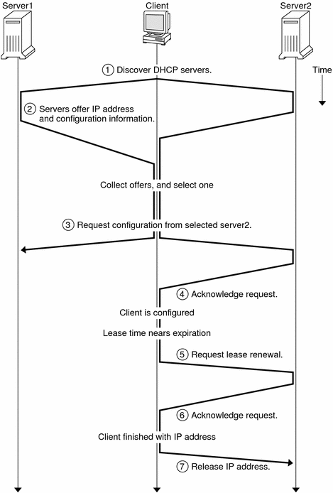

Previous
Previous
About Solaris DHCP (Overview)
This chapter introduces the Dynamic Host Configuration Protocol (DHCP), and explains the concepts that underlie the protocol. This chapter also describes the advantages of using DHCP in your network.
This chapter contains the following information:
About the DHCP Protocol
The DHCP protocol enables host systems in a TCP/IP network to be configured automatically for the network as the systems boot. DHCP uses a client-server mechanism. Servers store and manage configuration information for clients and provide that information upon a client's request. The information includes the client's IP address and information about network services that are available to the client.
DHCP evolved from an earlier protocol, BOOTP, which was designed for booting over a TCP/IP network. DHCP uses the same format as BOOTP for messages between the client and server. However, unlike BOOTP messages, DHCP messages can include network configuration data for the client.
A primary benefit of DHCP is its ability to manage IP address assignments through leases. Leases allow IP addresses to be reclaimed when they are not in use. The reclaimed IP addresses can be reassigned to other clients. A site that uses DHCP can use a smaller pool of IP addresses than would be needed if all clients were assigned a permanent IP address.
Advantages of Using Solaris DHCP
DHCP relieves you of some of the time-consuming tasks involved in setting up a TCP/IP network and in the daily management of that network. Note that Solaris DHCP works only with IPv4.
Solaris DHCP offers the following advantages:
IP address management - A primary advantage of DHCP is easier management of IP addresses. In a network without DHCP, you must manually assign IP addresses. You must be careful to assign unique IP addresses to each client and to configure each client individually. If a client moves to a different network, you must make manual modifications for that client. When DHCP is enabled, the DHCP server manages and assigns IP addresses without administrator intervention. Clients can move to other subnets without manual reconfiguration because they obtain, from a DHCP server, new client information appropriate for the new network.
Centralized network client configuration - You can create a tailored configuration for certain clients, or for certain types of clients. The configuration information is stored in one place, in the DHCP data store. You do not need to log in to a client to change its configuration. You can make changes for multiple clients just by changing the information in the data store.
Support of BOOTP clients - Both BOOTP servers and DHCP servers listen and respond to broadcasts from clients. The DHCP server can respond to requests from BOOTP clients as well as DHCP clients. BOOTP clients receive an IP address and the information needed to boot from a server.
Support of local clients and remote clients - BOOTP provides for the relaying of messages from one network to another network. DHCP takes advantage of the BOOTP relay feature in several ways. Most network routers can be configured to act as BOOTP relay agents to pass BOOTP requests to servers that are not on the client's network. DHCP requests can be relayed in the same manner because, to the router, DHCP requests are indistinguishable from BOOTP requests. The Solaris DHCP server can also be configured to behave as a BOOTP relay agent, if a router that supports BOOTP relay is not available.
Network booting - Clients can use DHCP to obtain the information that is needed to boot from a server on the network, instead of using RARP (Reverse Address Resolution Protocol) and the bootparams file. The DHCP server can give a client all the information that the client needs to function, including IP address, boot server, and network configuration information. Because DHCP requests can be relayed across subnets, you can deploy fewer boot servers in your network when you use DHCP network booting. RARP booting requires that each subnet have a boot server.
Large network support - Networks with millions of DHCP clients can use Solaris DHCP. The DHCP server uses multithreading to process many client requests simultaneously. The server also supports data stores that are optimized to handle large amounts of data. Data store access is handled by separate processing modules. This data store approach enables you to add support for any database that you require.
How DHCP Works
You must first install and configure the DHCP server. During configuration, you specify information about the network that clients need to operate on the network. After this information is in place, clients are able to request and receive network information.
The sequence of events for DHCP service is shown in the following diagram. The numbers in circles correlate to the numbered items in the description following the diagram.
Figure 12-1 Sequence of Events for DHCP Service
The preceding diagram shows the following steps:
The client discovers a DHCP server by broadcasting a discover message to the limited broadcast address (255.255.255.255) on the local subnet. If a router is present and configured to behave as a BOOTP relay agent, the request is passed to other DHCP servers on different subnets. The client's broadcast includes its unique ID, which, in the Solaris DHCP implementation, is derived from the client's Media Access Control (MAC) address. On an Ethernet network, the MAC address is the same as the Ethernet address.
DHCP servers that receive the discover message can determine the client's network by looking at the following information:
Which network interface did the request come in on? The server determines either that the client is on the network to which the interface is connected, or that the client is using a BOOTP relay agent connected to that network.
Does the request include the IP address of a BOOTP relay agent? When a request passes through a relay agent, the relay agent inserts its address in the request header. When the server detects a relay agent address, the server knows that the network portion of the address indicates the client's network address because the relay agent must be connected to the client's network.
Is the client's network subnetted? The server consults the netmasks table to find the subnet mask used on the network indicated by the relay agent's address or by the address of the network interface that received the request. Once the server knows the subnet mask used, it can determine which portion of the network address is the host portion, and then it can select an IP address appropriate for the client. See the netmasks(4) man page for information on netmasks.
After the DHCP servers determine the client's network, the servers select an appropriate IP address and verify that the address is not already in use. The DHCP servers then respond to the client by broadcasting an offer message. The offer message includes the selected IP address and information about services that can be configured for the client. Each server temporarily reserves the offered IP address until the client determines whether to use the IP address.
The client selects the best offer, based on the number and type of services offered. The client broadcasts a request that specifies the IP address of the server that made the best offer. The broadcast ensures that all the responding DHCP servers know that the client has chosen a server. The servers that are not chosen can cancel the reservations for the IP addresses that they had offered.
The selected server allocates the IP address for the client and stores the information in the DHCP data store. The server also sends an acknowledgement message (ACK) to the client. The acknowledgement message contains the network configuration parameters for the client. The client uses the ping utility to test the IP address to make sure no other system is using it. The client then continues booting to join the network.
The client monitors the lease time. When a set period of time has elapsed, the client sends a new message to the chosen server to increase the lease time.
The DHCP server that receives the request extends the lease time if the lease still adheres to the local lease policy set by the administrator. If the server does not respond within 20 seconds, the client broadcasts a request so that one of the other DHCP servers can extend the lease.
When the client no longer needs the IP address, the client notifies the server that the IP address is released. This notification can happen during an orderly shutdown and can also be done manually.
Solaris DHCP Server
The Solaris DHCP server runs as a daemon in the Solaris Operating System (Solaris OS) on a host system. The server has two basic functions:
Managing IP addresses - The DHCP server controls a range of IP addresses and allocates them to clients, either permanently or for a defined period of time. The server uses a lease mechanism to determine how long a client can use a nonpermanent address. When the address is no longer in use, it is returned to the pool and can be reassigned. The server maintains information about the binding of IP addresses to clients in its DHCP network tables, ensuring that no address is used by more than one client.
Providing network configuration for clients - The server assigns an IP address and provides other information for network configuration, such as a host name, broadcast address, network subnet mask, default gateway, name service, and potentially much more information. The network configuration information is obtained from the server's dhcptab database.
The Solaris DHCP server can also be configured to perform the following additional functions:
Responding to BOOTP client requests - The server listens for broadcasts from BOOTP clients discovering a BOOTP server and provides them with an IP address and boot parameters. The information must have been configured statically by an administrator. The DHCP server can simultaneously perform as a BOOTP server and as a DHCP server.
Relaying requests - The server relays BOOTP and DHCP requests to appropriate servers on other subnets. The server cannot provide DHCP or BOOTP service when configured as a BOOTP relay agent.
Providing network booting support for DHCP clients - The server can provide DHCP clients with information needed to boot over the network: an IP address, boot parameters, and network configuration information. The server can also provide information that DHCP clients need to boot and install over a wide area network (WAN).
Updating DNS tables for clients that supply a host name - For clients that provide a Hostname option and value in their requests for DHCP service, the server can attempt DNS updates on their behalf.